| |
|
DOLGU İYİLEŞTİRMELERİ
|
Bu menüden, dolguları oturtmak için zemin iyileştirmeleri üç ana tip ve varyantlarına göre tasarlanır ve hesaplanır, böylece bu konudaki olası çözümler kapsanır. DOLGU İYİLEŞTİRMELERİ menüsüne girildiğinde, her bir kesim için tanım satırları eklemenin mümkün olduğu bir veri tablosu belirir. Bu tanım .vol dosyasında saklanacak ve eksenin geri kalanıyla birlikte hesaplanacaktır. Ayrıca, bu iyileştirmeleri kaydetmek  ve yüklemek ve yüklemek  .spt uzantılı dosyalarda bağımsız olarak da mümkündür. .spt uzantılı dosyalarda bağımsız olarak da mümkündür.Kullanıcı KM'leri seçeneği, KM'lerin kullanıcı değerleriyle girilmesine olanak tanır. Bu seçenek etkinleştirilebilir/devre dışı bırakılabilir ve aktivasyon durumu .vol dosyasında saklanır. 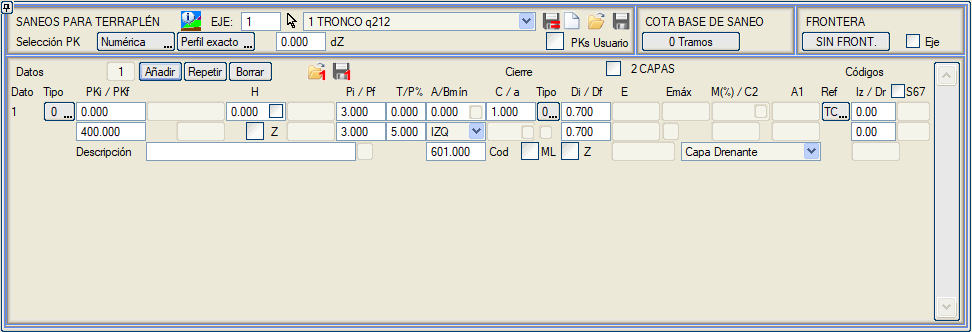
Bir veri eklendiğinde (Baş.KM ve Bit.KM ile tanımlanan bir kesime karşılık gelir), ilk olarak iyileştirme tipi belirtilmelidir. Aynı zamanda, program seçilen her tip için sadece gerekli kutucukları kullanılabilir hale getirir ve geri kalanını gizler. 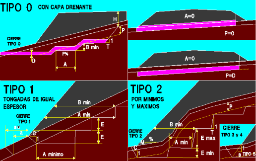
Her iyileştirme kesimi içinde, her bir iyileştirme verisine bir açıklama veya yorum verilebilir. Bu yorum, bir metin tablosu aracılığıyla boykesit potasında yansıtılabilir. Tüm diğer yapılandırmaların türetildiği ana tipler üç tanedir ve ilgili modelde görülebilir:
Ayrıca, geniş bir iyileştirme bitişi tipolojisi mevcuttur. Bu belgenin okunmasını basitleştirmek amacıyla, aşağıdaki bölümlerin açıklandığı dolgu iyileştirmelerinin gelişmiş tanımıyla ilgili konular son bölümde sunulmuştur:
Drenaj tabakalı iyileştirme (tip 0) Gerekli veriler, kesimin başlangıç ve bitiş KM'lerine ek olarak, kademeli uygulamanın (azalan yönde) yapılmasını belirleyen minimum dolgu yüksekliği H'dir. 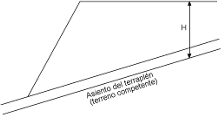
Dolgu kretinden ve sağlam zemin (çizgi tipi 66) üzerindeki oturma hattından ölçülür. Bu minimum yüksekliğin altında kademelendirme yapılmaz. Kademeler, sağlam zeminden P derinliğinde bir referans hattı üzerinde inşa edilmeye başlanır. Bu P derinliği, Z kutucuğu işaretlenerek mutlak kot olarak verilebilir, ancak bu seçeneğin sadece tip 2 iyileştirmelerde kullanılması tavsiye edilir. H hattının işaretlediği başlangıç noktasından itibaren, program kademeleri belirli bir T şevi ve A genişliği ile ayarlar. Kademelendirme, dolgu şev eteği noktasına kadar ulaşır ve yüzeye (drenaj) çıkarmaya çalışır. Bu tür iyileştirmelerde, kademelerin yarı yatay kesimleri için % cinsinden bir eğim (parametre P%) tanımlamak da mümkündür.  Bitiş, tip 1 ve 2 iyileştirmeler için tanımlananlar gibi de yapılabilir. Bunun için, mevcut beş tipten (0, 1, 2, 3 ve 4) biri olan C (bitiş şevi) ve bitiş tipi verileri kullanılacaktır.
YK: Karma Kesit bölgelerinde, iyileştirme yarma bölgesindeki fazla kazının altında devam eder. Metraj şu şekilde yapılır:
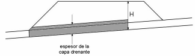Tip 0 içinde iki özel durum olabilir. Bunlardan birincisinde, kademelendirme yoktur (A = 0) ve referans hattı, dolgunun oturduğu sağlam zemin hattının (L66) kendisi olacaktır (P = 0). Bu durumda, drenaj katmanı kalınlığı D, bitkisel veya zayıf zemin kalınlığından daha büyük olabilir. 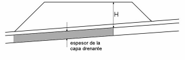Ayrıca, kademelendirme olmaması (A = 0) ve referans hattının derinliğinin, drenaj katmanının kalınlığına (P = D) eşit olması durumu da olabilir. Bu durumda, drenaj katmanı referans hattına dayanır ve tavanı sağlam zemin hattı (L66) olacaktır. P derinliği ve drenaj katmanı kalınlığı D değerleri, kesimin başlangıç ve bitiş KM'si arasında değişebilir. Tavanı doğal arazinin üzerinde olan bir drenaj katmanı olması durumunda, bu katman, doğal arazinin üzerindeki ve altındaki malzemenin ayrı bir metrajını elde etmek için iki malzemeye bölünebilir (metraj listelerinde GECIS_MALZ_1 ve GECIS_MALZ_2 olarak görünecektir). Bunun için 2 KATMAN kutucuğunu etkinleştirmek gerekir. Dolgu yüksekliğinin belirli bir değerden düşük olduğu dolgu iyileştirmesio Daha önce görüldüğü gibi, tip 0 iyileştirmeler için ve sıfır kademe genişliğiyle (A=0), H, iyileştirmenin yapılmadığı maksimum dolgu yüksekliğini belirtir. Ancak bu değer negatif işaretle (–H) girilirse, o zaman dolgu etekleri, yükseklik H olana kadar iyileştirilir ve dolayısıyla, dolgu yüksekliği H'den küçükse tüm genişlik iyileştirilir. Tek bir eğimle iyileştirme A=0 ve P%= 1000 olan tip 0 iyileştirmeler için (kenarların bir derinliğinden düz birleştirme), bu durum için sol ve sağ tarafta farklı bir derinlik tanımlamak mümkündür. 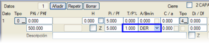
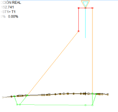
Bu, örneğin resimde gösterilen barajların tasarımında kullanışlı olabilir. Öte yandan, bir taraftan sabit eğimli iyileştirmeler için, referans noktası, kod 601'i örneğin 3010'a (kafa hendeği tabanı) değiştirerek artık değiştirilebilir. Sol ve sağ tarafta farklı derinlikte iyileştirme A=0 ve P%= 1000 olan tip 0 iyileştirmeler için (kenarların bir derinliğinden düz birleştirme), bu durum için sol ve sağ tarafta farklı bir derinlik tanımlamak mümkündür. 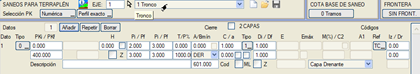 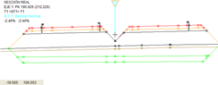 Her kademenin minimum yüksekliği (Bmin) ve eğimleri ile tanımlanan iyileştirme Sadece kademe yüksekliği Bmin'i kontrol etmek istendiğinde, minimum genişlik A'ya da bir değer girmek gerekir (örn. 0.1), çünkü A=0 ile kademesiz bir iyileştirme yapılır. 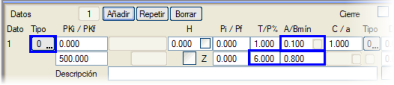
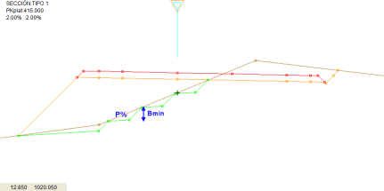
2 katmana bölünmüş drenaj tabakalı iyileştirme 2 KATMAN kutucuğunu etkinleştirerek, drenaj katmanının metrajını ikiye bölebiliriz, bitkisel toprak katmanından başlayarak ayırt ederek ve geçiş malzemelerini sadece geçiş dolguları için bırakarak. 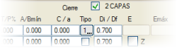
Eksende ölçülen yüksekliğe bağlı olarak alternatif iyileştirmeler Eksende ölçülen yüksekliğe bağlı olarak alternatif iyileştirmeler tanımlanabilir. Bu durumda, en büyük yükseklikten başlayarak tanımlanmalıdır. Örneğin:
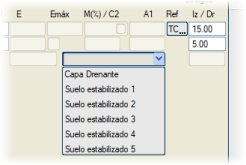
Eşit kalınlıktaki tabakalar için iyileştirme (tip 1) Uygulama makineleri birkaç parametreyi belirler. Minimum genişlik parametresi (Amin), kazı makinelerinin genişliğiyle, tabakaların kalınlığı ise serici makinelerle belirlenir. Ayrıca, her kademenin başından dolgu şevine kadar minimum bir mesafe belirlenebilir ve bu, Bmin parametresiyle verilir. Kademeli uygulamanın yapılmasını belirleyen, enkesit bandındaki arazinin genel eğiminin bir M değeri vardır. Eğer eğim belirli bir M sınır değerini aşarsa, kademeli kazı yapılır. Bu değere ulaşılmazsa, kademelendirme yapılmaz (ancak iyileştirme yapılır).  Bu kazı, dolgu şev eteğinden, dolgunun oturduğu sağlam zemin hattını (L66) kesene kadar belirli bir C şeviyle başlar. Bu kazı, dolgu şev eteğinden, dolgunun oturduğu sağlam zemin hattını (L66) kesene kadar belirli bir C şeviyle başlar.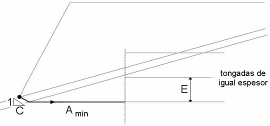Tabakaların E kalınlığına göre, kademeyi oluşturmak için belirli sayıda tabaka serilebilir. Şekilde, iki tabakaya karşılık gelen kalınlık, oturma hattı 66'yı aşmaktadır. İlk tabaka serilir ve dolgu oturma hattının ikinciyle kesişimine kadar ulaşılır, sonuçtaki A genişliğinin tolere edilebilir minimum genişlik Amin'den büyük olduğu kontrol edilir. Aksi takdirde, minimum genişlik kazılır ve daha önce bahsedilen prosedüre göre işlem yapılır.  Dolgu eteğinde, belirtilen Amin genişliğinde tek bir kademe yapma imkanı vardır. Bu durumda, kademe kazısı için bir T şevi tanımlanmasına izin verilir. 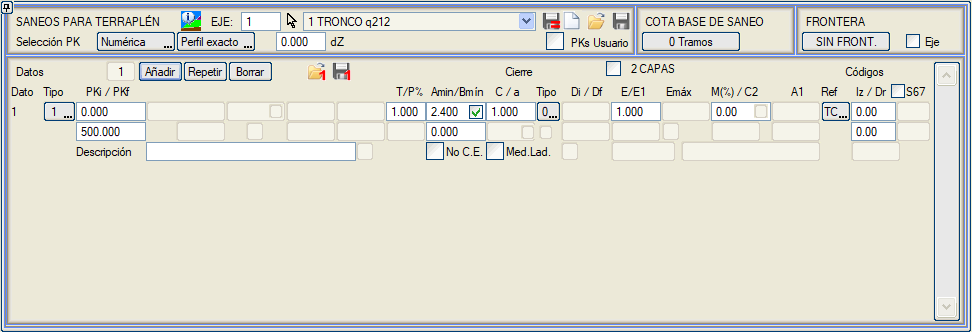
Tip 1 iyileştirmeler için, A=0 genişliğiyle: Eğer eğime %1000'lik bir değer girersek, bir dolgu eteğinden diğerine (belirtilen derinlikle) değişken eğimle yapılır. Maksimum ve minimum kademelerle iyileştirme (tip 2) Yine, Amin, kademe başına minimum genişliktir. Ayrıca, bu durumda maksimum kademe Emaks ve minimum kademe Emin vardır. Bu tür iyileştirmelere bir drenaj katmanı da eklenebilir. Kademelerin şevi, T kutucuğundan verilir ve eğimleri P% kutucuğundan verilebilir. 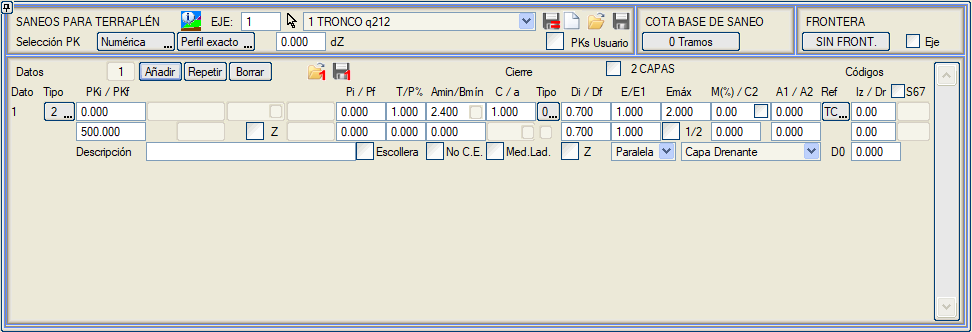
Tip 1 iyileştirme durumunda olduğu gibi, her kademenin başından dolgu şevine kadar olan minimum mesafe de Bmin parametresiyle belirlenebilir. İlk kademe için, A1 değeriyle farklı bir genişlik tanımlanabilir. Her durumda, bu tür bir iyileştirmede Bmin parametresi kullanılırsa, ilk kademenin o genişliğinin (A1) iptal edilmesi tavsiye edilir; bu durumda Amin için daha küçük değerler kullanılabilir. Kademelendirme için referans hattı, P derinliğine konumlandırılır. Bu P derinliği, Z kutucuğu işaretlenerek mutlak kot olarak verilebilir. 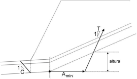Bu tür kademelendirmenin tasarımı, referans hattını kesene kadar belirli bir T şeviyle, minimum Amín veya A1 genişliğiyle başlar. Ulaşılan yükseklik, minimum Emin ve maksimum Emaks kademe boyutlarıyla karşılaştırılır. Kazının bitişi, dolgu şev eteğinin düşeyinde, bir C şeviyle yapılır, ancak bitiş tipleri 0 veya 1 için de yapılandırılabilir.
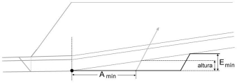 Eğer bu yükseklik, minimum kademe Emin'den küçükse, minimum kademeyi uygulamayı başarana kadar minimum genişlik aşılır. 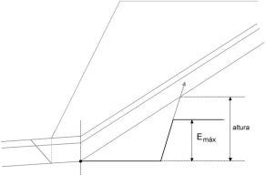 Eğer değeri, minimum Emin ve maksimum Emaks kademeler arasında ise, ulaşılan yüksekliğe göre uygulanır. 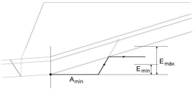 Son olarak, sonuçtaki yükseklik maksimum kademe Emaks'tan büyükse, minimum genişlik Amin uygulanır ve Emaks değeriyle bir önceki kademe oluşturulur, ardından yeni bir minimum genişlikle devam edilir. İlk kademe için farklı bir yükseklik, E1, önceden belirlenebilir. Örn: 1m yüksekliğinde bir ilk kademe ve geri kalanı 0.5m istiyoruz. O zaman şöyle yaparız: E=0.5 Emaks=0.5 E1=1.00 (bunun için Emaks 1.0 olarak alınır). 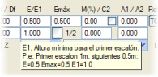
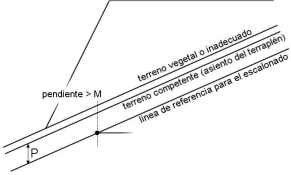M, % cinsinden bir sınırlayıcı faktördür; bu faktörle, arazi eğimi o değeri aştığı andan itibaren kademelendirme yapılır, eğimin altında kaldığı bölgelerde ise kademelendirme yapılmaz (ancak iyileştirme yapılır). Program, eğimi sadece arazi profilinin bir yükselen veya alçalan kesiminin başında analiz eder. 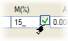Onay kutucuğu etkinleştirilirse, program, arazi profilinin bir yükselen veya alçalan kesiminde araya girmiş olsalar bile, belirtilenden daha düşük eğimli bölgelerde kademelendirme yapmaktan kaçınır. Drenaj katmanının Di/Df kalınlığının sadece dikey olarak ölçülmesi imkanımız vardır. 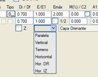
Drenaj Katmanının tavanıyla ilgili olarak: aşağıdaki modlara sahibiz: Paralel/Dikey/Arazi/Yatay.
1/2 kutucuğu etkinleştirildiğinde, kademelerin yüksekliği, tanımlanan derinliğin yarısı yukarıda ve diğer yarısı aşağıda olacak şekilde uygulanır. D0 kutucuğu: Drenaj katmanı iki katmana bölünebilir. Eğer D0 > 0 ve drenaj katmanının toplam kalınlığı D'den küçük bir değer verilirse, o zaman drenaj katmanının tabanında D0 kalınlığında bir katman oluşturulur. Bu katmanın metrajı için malzeme Stabilize Zemin 1, 2 veya 3 olabilir. Ve tavana kadar olan geri kalanı Drenaj Katmanı olacaktır. Eğer Di ve Df değerleri drenaj katmanının tavanının mutlak kotu olarak verilirse, o zaman D0 da drenaj katmanı tabanının tavanı için mutlak kot olarak alınacaktır. 2 KATMAN seçeneği ile uyumlu DEĞİLDİR. 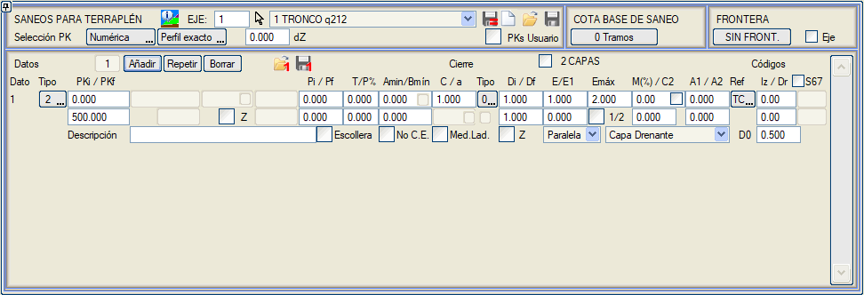
Eğer A1 genişliğine 1000 değeri atarsak, o zaman iyileştirme hattı, iyileştirmenin başlangıç ve bitiş noktaları arasında bir doğrudur. Tip 1 ve 2 iyileştirmeler için, mevcut kaplamanın varlığını dikkate almayan Mevcut Kapl. Yok seçeneğimiz vardır. Tip 2 iyileştirmeler için, dolgu bir anroşman üzerine oturduğunda, kademelendirmenin anroşman tabanından (kod 601.1) başlamasına izin veren Anroşman seçeneğini etkinleştirmek mümkündür. İyileştirme Bitişleri Program, aşağıda açıklanan çeşitli iyileştirme bitişi türlerine sahiptir. Tip 0, 1 ve 2 iyileştirme bitişleri Bu bitiş türünde, dolgu şev eteği iyileştirme tabanına yansıtılır ve bu, doğal arazi ile kesişene kadar yatay olarak dışarı doğru uzatılır. Tip 1 bitişi, dolgu şev eteğinden başlar ve kullanıcı tarafından belirtilen C şeviyle iyileştirme tabanını arar.  Bu bitiş türü için ayrıca, iyileştirmenin başlangıcı, a parametresi aracılığıyla dolgu şev eteğinden ölçülen sabit bir mesafede kaydırılabilir. İşleyişi şöyledir: Pay, dolgu şev eteğinden yatay olarak ölçülür. Pozitif değerler dışa doğru bir ötelemeyi, negatif değerler ise içe doğru bir ötelemeyi belirtir. Varsayılan olarak mesafe, bitiş şevinin eteğine kadar ölçülür. Ek olarak, bu parametrenin yanındaki kutucuk etkinleştirilirse, mesafe dolgu şev eteğinden yerine bitiş şevinin başından ölçülecektir. Bu bitiş türü için ayrıca, iyileştirmenin başlangıcı, a parametresi aracılığıyla dolgu şev eteğinden ölçülen sabit bir mesafede kaydırılabilir. İşleyişi şöyledir: Pay, dolgu şev eteğinden yatay olarak ölçülür. Pozitif değerler dışa doğru bir ötelemeyi, negatif değerler ise içe doğru bir ötelemeyi belirtir. Varsayılan olarak mesafe, bitiş şevinin eteğine kadar ölçülür. Ek olarak, bu parametrenin yanındaki kutucuk etkinleştirilirse, mesafe dolgu şev eteğinden yerine bitiş şevinin başından ölçülecektir.İlk kutucuk etkinleştirilerek: iyileştirme payının değeri, dolgu şevinin yüksekliğine bağlı olarak verilebilir: Pay = a x Yükseklik. Pay değerinin sağındaki ikinci kutucuk şu durumlarda kullanılır: Yarma geometrisine sahip (hendek vb.) ancak dolguda olan kesitler için, çünkü kazı tamamen bitkisel veya zayıf zemin içinde olup sağlam zemine ulaşmamaktadır.
İyileştirmenin 100 kodunda bitmesi ve 600'e (hendek tabanı) kadar uzatılmaması sağlanabilir. Bunun için, istenen bitiş şeviyle tip 1 bir iyileştirme bitişi seçilir ve pay değeri a=0 bırakılarak, Dolgu şev eteğinden iyileştirme başına ölçülen pay seçeneği işaretlenir. Eğer bu son seçenek Karma Kesit seçeneğiyle aynı anda kullanılırsa, pay hendek tabanından (yani kod 600'den) da uygulanacaktır. Tip 2 bitişi durumunda ise, dolgu şev eteği iyileştirme tabanına yansıtılır ve bu noktadan itibaren C şeviyle ve doğal araziye kadar dışarı doğru çıkılır. Tip 3, 4 ve 5 iyileştirme bitişleri Tip 2'ye benzerler, ancak iyileştirmenin başlangıç noktası olarak, iyileştirme derinliğindeki dolgu şev eteğinin düşeyi yerine, iyileştirme horizonuna kadar şevini takip eden dolgu şev eteğinin uzantısı alınır. Dolgu metrajı o zaman, bitkisel toprağı yüzeye kadar dolduracak kısmı içermez, yani sağlam zeminden yukarıya doğru dolgu şevi içinde ölçülür. İyileştirme dolgusu metrajı ( DOLGU_IYIL olarak verilir), tüm iyileştirme kazısını (sağlam zemin altı) ölçer ve dolgu şevinin uzantısının dışında kalan miktar dahil edilmez. Bu kısım, dolgu şevinin dışına ve yüzeye kadar farklı bir malzeme ile doldurulması durumunda ayrı olarak ölçülür. Tip 4 bitişi, tip 3'e benzer, ancak farkı, dolgu hattının (L86), dolgu şev eteğinden arazi yüzeyi boyunca iyileştirme sonuna kadar gitmek yerine, dolgu şeviyle iyileştirme tabanını kesene kadar alçalmaya devam etmesi ve ardından bu çizgiyi sona kadar takip etmesidir. Ayrıca, tip 4 bitişli iyileştirmeler için:
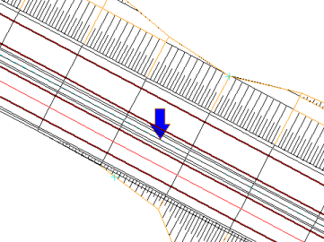
Tip 5 bitişi, tip 4'e benzer, ancak farkı, bu durumda a parametresinin, dolgunun iyileştirme tabanına kadar uzatıldığı şevi belirtmek için kullanılmasıdır. İyileştirmeler ve kullanım ile kamulaştırma alanları Dolgu şev eteğinden daha uzağa başlayan bir bitişle ilişkili bir dolgu iyileştirmesi olduğunda, program bunu, gerçek kullanım alanlarını dikkate almak için listelerde ve çizimlerde dikkate alır. Ayrıca, kamulaştırma sınırı o noktadan itibaren ölçülür. Dolgu iyileştirmelerinin gelişmiş tanımı Bu bölümde, açıklanan tüm iyileştirme tiplerine ortak olan bir dizi parametreye bağlı olarak dolgu iyileştirmesini yapılandırmak için programın sunduğu bir dizi olanak bir araya getirilmiştir. Yanal sınırlama: koda göre iyileştirme 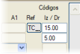ENKESİT DÜZENLEYİCİ'den arazi yüzeyinin kodlarını tanımlamak mümkündür, bu da iyileştirmeyi sınırlamak için kullanılabilir. Aynı KM'de, arazi yüzeyinin kodlarına göre farklı bölgeleri tanımlayarak farklı iyileştirme tipleri uygulanabilir. Platform yüzeyinin (Yüzey 67) kodlarını kullanmak mümkündür. Bu durumda ayrıca taraf da belirtilmelidir. Eğer kod 0 kullanılırsa, o tarafta sınırlama olmadığı anlamına gelir. Ayrıca, aşağıdaki hususlar dikkate alınmalıdır:
Dolgu kesitinde mevcut bir karayolunun tanındığı bir arazi düşünelim. Mevcut karayolunun genişletilmesi projesi yapılır ve orijinal arazi bölgelerinde belirli özelliklere sahip bir tip 1 iyileştirme ve mevcut dolgu bölgesinde farklı bir geometriye sahip bir tip 2 iyileştirme yapılması istenir.
İlk adım, ENKESİT DÜZENLEYİCİ aracılığıyla, arazi profilindeki mevcut dolgu eteklerini kodlamaktır. Örneğin, şöyle ayarlanabilir: Mevcut sol dolgu eteği: kod 15
Mevcut sağ dolgu eteği: kod 5 Dolgu iyileştirmeleri menüsünde, aynı KM aralığıyla, aşağıdaki gibi üç veri satırı tanımlanacaktır:
Sağlam zemin ve uygun olmayan zemin referanslı iyileştirmeler  Sağlam ve zayıf zemin referansları sadece tip 0 ve tip 2 iyileştirmelere uygulanabilir. ISTRAM®/ISPOL® bu konuda aşağıdaki olanakları sunar: Sağlam ve zayıf zemin referansları sadece tip 0 ve tip 2 iyileştirmelere uygulanabilir. ISTRAM®/ISPOL® bu konuda aşağıdaki olanakları sunar:
Bir dolgu iyileştirmesi, uygun olmayan arazi yüzeyinde referansla tanımlandığında, yarma bölgelerindeki davranış değiştirilir. İyileştirme hattı (L87), fazla kazı hattı (L107) veya terasman (L68) ile veya bunlardan daha alçak olduğu yerlerde uygun olmayan arazi (L105) hattı ile tamamlanır, böylece platformun altında da 87 hattının altındaki uygun olmayan arazi kaldırılmaz.
SZp referansıyla genişletme ve iyileştirme projelerinde, mevcut kaplamanın altında iyileştirme uygulanmaz. Bu durumda dolgu iyileştirmesi tanımlanırken tip 2 kullanılması tavsiye edilir.
Dolgu iyileştirmeleri ve uygun olmayan zeminde yarma vektörü Uygun olmayan zeminde bir yarma vektörünü dolgu iyileştirmesiyle birlikte kullanmak mümkündür. Herhangi bir iyileştirme türü (0, 1, 2) için geçerlidir, ancak bir tip 1 bitişi kullanılmalıdır. O zaman, dolgu şevi sağlam zemin hattına (L66) kadar iner ve o noktadan iki çizgi doğar:
Sınırlar ve aynı enkesitte iki tip iyileştirme 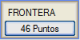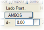Dolgu iyileştirmeleri menüsünde, yatayda bir sınır çizgisi seçilebilir. İyileştirmeler, çizginin sadece bir tarafında veya her iki tarafında yapılabilir. Aynı KM'de (eşit veya çakışan kesimler), birisi çizginin solunda ve diğeri sağında olmak üzere iki iyileştirme bir arada bulunabilir. Örneğin, kısmen mevcut bir dolgu üzerine oturan bir hat genişletmesi durumunda, orijinal araziye oturan kısım bir tür iyileştirme ile ve mevcut dolguya oturan kısım başka bir türle iyileştirilebilir; sınır çizgisi olarak mevcut dolgunun eteği seçilerek. Eğer bir sınırın bir tarafı için bir iyileştirme tanımlanırsa, sınır çizgisine bir mesafe de belirtilebilir. Eğer aynı bölgede iki iyileştirme tanımlanırsa, örneğin:
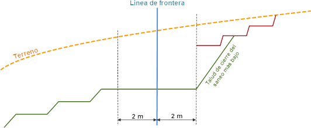
Bir KM'de, bir kodla veya Sınır Çizgisiyle kesilmiş tek bir iyileştirme verimiz olduğunda, eğer 0 veya 1 tipi bir bitişimiz ve 0'dan farklı bir şevimiz varsa, bu şevle koddan veya sınır çizgisinden araziye veya kazı hattına (Terasman veya seçme malzeme) karşı kapatır. 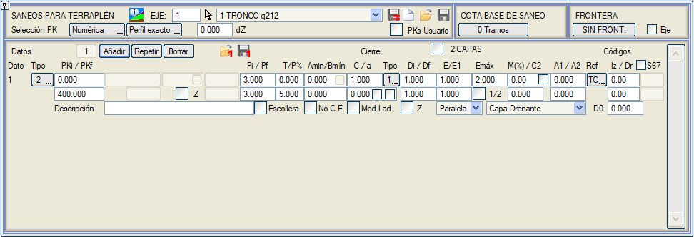
Geometrik ekseni, tanımlanmadığı bölgelerde veya hiçbir sınır çizgisi seçilmemişse sınır çizgisi olarak kullanmak mümkündür; ayrıca, o sınır çizgisi için eksene bir mesafe de belirtilebilir: 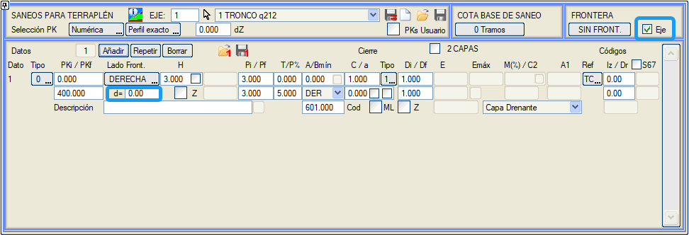 Taban kotu ile verilen iyileştirmeler 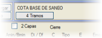ISTRAM®/ISPOL®, başlangıç ve bitiş KM'leri ile başlangıç ve bitiş mutlak kotlarıyla verilen kesimlere göre, tip 0 veya tip 2 bir iyileştirme tanımlamak için bir liste oluşturmayı sağlar. Bu seçenek, Pi ve Pf değerlerinin mutlak kot olduğu (seçenek Z) her liste kesimi için bir iyileştirme tanımlamaya eşdeğerdir. Fark, iyileştirme taban kotu ile bir liste kullanıldığında, sadece bir iyileştirme verisi ( tip 0 veya tip 2) tanımlamanın yeterli olmasıdır. 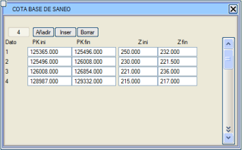
Mevcut kaplamalı iyileştirmeler Genişletme ve iyileştirme projesi durumunda, mevcut kaplama kenarındaki bitiş şevini temsil eden C2 ve mevcut kaplama kenarındaki palye genişliği olan A2 parametrelerini kullanabiliriz. Tip 2 iyileştirmeler tavsiye edilir. Dolgu iyileştirmesi için bir A2 palye genişliği ve mevcut kaplama kenarında bir T2 şevi tanımlandığında, bu şevin, arazideki nihai bitiş şevi bölgesindeki teorik iyileştirme hattını kesmesi olabilir. Bu durumlarda, kaplamanın bu tarafındaki tüm iyileştirme kaldırılır. Mevcut kaplamalı durumlar için, mevcut kaplamanın altındaki araziyi iyileştirmek isteniyorsa, Kazıma ve Söküm sekmesinde, Hiçbir durumda kullanma seçeneği için, Mevcut kaplama altında iyileştirmeye izin ver seçeneği eklenir. 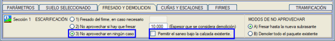
|